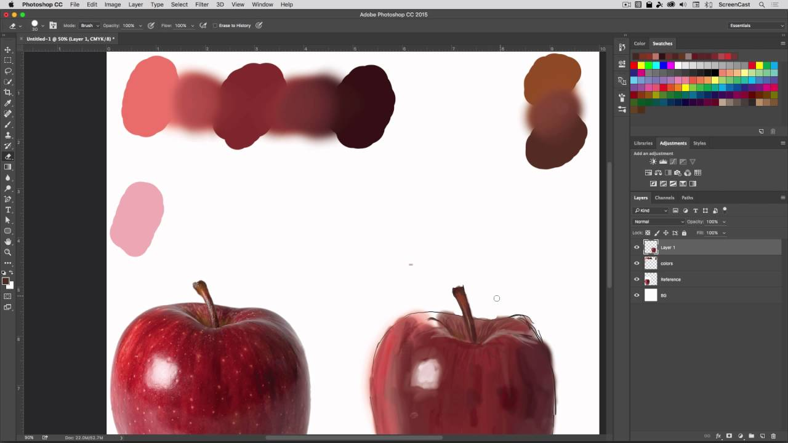
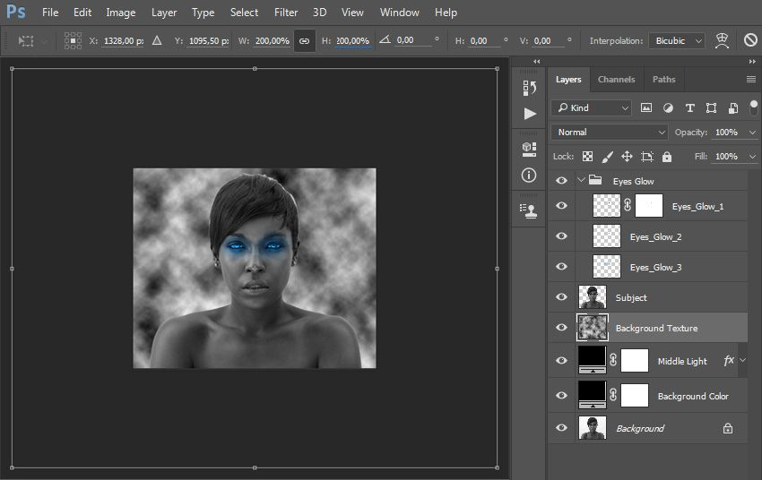

Растровый рисунок в Photoshop — это изображение, состоящее из пикселей, где каждому пикселю соответствует свой цвет и координата на холсте. Такой формат идеально подходит для работы с фотографиями, сложными иллюстрациями, текстурами и эффектами, требующими детализации и плавных переходов.

Слои и фильтры — ключевые инструменты Photoshop, делающие его мощным средством для создания и обработки цифровых изображений. Слои — это основа работы в Adobe Photoshop. Каждый слой представляет собой отдельный «лист», на котором можно размещать изображения, текст, фигуры или эффекты. Слои можно перемещать, скрывать, изменять их прозрачность и порядок наложения. Это позволяет гибко редактировать изображение, не затрагивая остальные элементы. Благодаря слоям можно создавать сложные композиции, объединять разные изображения, применять маски и корректирующие слои для неразрушающего редактирования. Фильтры — это специальные эффекты, которые применяются к изображению или отдельному слою для изменения их внешнего вида. В Photoshop есть множество фильтров: размытие, резкость, стилизация, искажение, шум и другие. Фильтры позволяют быстро преобразовать изображение, добавить художественные эффекты или улучшить качество фотографии. Их можно применять как к обычным слоям, так и к смарт-объектам, чтобы сохранить возможность последующего изменения параметров фильтра.
.jpg)
Работа с текстом в Adobe Photoshop — это обширная тема, включающая множество приёмов и инструментов для создания, редактирования и оформления надписей.